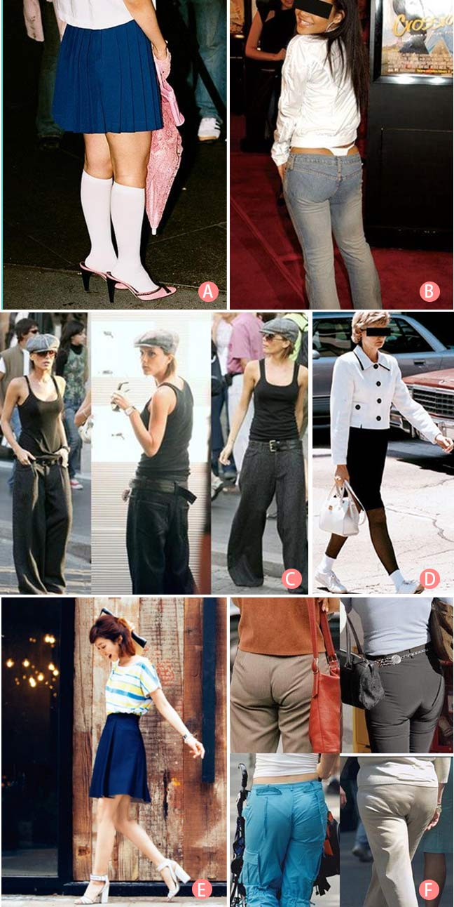

在生活中经常会看到长的蛮不错的MM，本来心里不由对她一阵赞赏。可当看到她的穿着时，不免一惊！先前的好感全没了。可能她穿着一件看起来很性感的黑色丝绸连衣裙，可偏偏搭配了一双白色的旅游鞋。其实在生活中，大家都会犯一些搭配上的小错误，而这些小的错误又是致命的！
错误的穿着千奇百怪，快用你的火眼金睛找出穿着正确的搭配吧！

正确答案：E
错误着装原因分析
图A
穿凉鞋时，哪怕是透明的肉色丝袜都不要穿，更别说是露半截腿的袜子。（哈韩的哈日的彩色半截袜不在此范围）
图B
近些年很流行低腰裤，但是内裤也悄悄露出了脑袋，很不雅观。
图C
有些人会选择小一号的衣服，认为可以显瘦；有些人会选择大一号的衣服，认为可以遮胖。其实这两种观念都不对，衣服紧要显出你的曲线；衣服松要显出你的气质哦。
图D
职业装配旅游鞋是上上世纪的搭配手法。职业裙装还是需要搭配高跟船鞋哦。
图F
内衣的穿戴也要合适，如果过紧的外衣里面最好搭配无痕的内衣裤。